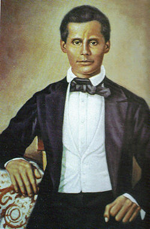

Respuesta correcta

Francisco del Rosario Sánchez fue uno de los que aportaron recursos a la causa independentista, pero el principal apoyo económico provino de María Baltasara de los Reyes y otros patriotas que donaron bienes y dinero para financiar la lucha.
Siguiente